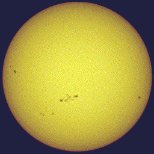

Il Sole è l'unica stella la cui forma possa essere apprezzata semplicemente alla vista, grazie al
suo diametro angolare apparente medio di 32' 03" d'arco, che varia però a seconda del punto in cui la Terra si trova nel corso
 della sua orbita: raggiunge infatti il valore massimo (32' 35") quando il nostro pianeta si trova al perielio, mentre il valore minimo (31' 31") all'afelio. Simili dimensioni apparenti consentono, previo l'utilizzo di particolare strumentazione ed adeguate protezioni, di osservare i dettagli della superficie della nostra stella allo scopo di rivelare e studiare i fenomeni
A occhio nudo è possibile distinguere il disco solare al tramonto o in presenza di nebbia e nubi, quando l'intensità luminosa è sensibilmente minore. Tali osservazioni permettono, seppure in rare circostanze, di osservare delle macchie solari
particolarmente estese. Utilizzando poi un modesto telescopio, dotato di un adeguato filtro o utilizzato in modo da proiettare l'immagine della stella su uno schermo bianco, è possibile osservare agevolmente le macchie solari e i brillamenti. Tuttavia, a causa dei rischi a cui è soggetta la retina dell'occhio, l'osservazione del Sole senza le giuste protezioni è dannosa alla vista: infatti, la forte radiazione può provocare la morte di parte delle cellule della retina, deputate alla visione, oppure la degenerazione di alcune strutture oculari, come il cristallino.
della sua orbita: raggiunge infatti il valore massimo (32' 35") quando il nostro pianeta si trova al perielio, mentre il valore minimo (31' 31") all'afelio. Simili dimensioni apparenti consentono, previo l'utilizzo di particolare strumentazione ed adeguate protezioni, di osservare i dettagli della superficie della nostra stella allo scopo di rivelare e studiare i fenomeni
A occhio nudo è possibile distinguere il disco solare al tramonto o in presenza di nebbia e nubi, quando l'intensità luminosa è sensibilmente minore. Tali osservazioni permettono, seppure in rare circostanze, di osservare delle macchie solari
particolarmente estese. Utilizzando poi un modesto telescopio, dotato di un adeguato filtro o utilizzato in modo da proiettare l'immagine della stella su uno schermo bianco, è possibile osservare agevolmente le macchie solari e i brillamenti. Tuttavia, a causa dei rischi a cui è soggetta la retina dell'occhio, l'osservazione del Sole senza le giuste protezioni è dannosa alla vista: infatti, la forte radiazione può provocare la morte di parte delle cellule della retina, deputate alla visione, oppure la degenerazione di alcune strutture oculari, come il cristallino.
Il Sole è una sfera di plasma quasi perfetta, le cui dimensioni sono un po' più grandi di quelle di una stella di media grandezza, ma decisamente più piccole di quelle di una ben più imponente gigante blu o gigante rossa. Possiede un'ellitticità stimata in circa 9 milionesimi: infatti, il suo diametro polare differisce da quello equatoriale di appena 10 km. Tale differenza sussiste perché la rotazione del corpo sul proprio asse origina all'equatore una forza, che  tenderebbe a fargli assumere una forma ellissoidale: la forza centrifuga. Tuttavia, poiché la rotazione della stella è molto lenta, la forza centrifuga è 18 milioni di volte più debole della gravità superficiale; da ciò ne consegue che la stella non possieda un rigonfiamento equatoriale molto pronunciato, caratteristica propria invece di alcune stelle, come Achernar, le quali possiedono elevate velocità di rotazione. Inoltre, gli effetti mareali esercitati dai pianeti sulla stella non ne influenzano significativamente la forma. Poiché si trova allo stato di plasma e non possiede, al contrario di un pianeta roccioso, una superficie solida, la stella è soggetta ad una rotazione differenziale, ovvero ruota in maniera diversa a seconda della latitudine: infatti la stella ruota più velocemente all'equatore che non ai poli ed il periodo di rotazione varia tra i 25 giorni dell'equatore e i 35 dei poli. Tuttavia, poiché il punto di vista osservativo dalla Terra cambia man mano che il nostro pianeta compie il proprio moto di rivoluzione, il periodo di rotazione apparente all'equatore è di 28 giorni. Inoltre, la densità dei gas che costituiscono la stella diminuisce esponenzialmente all'aumentare della distanza dal centro.
© Copyright "Astronomy", 2018